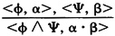

by Abraham Kandel
CRC Press, CRC Press LLC
ISBN: 084934297x Pub Date: 11/01/91
|
|
Fuzzy Expert Systems
by Abraham Kandel CRC Press, CRC Press LLC ISBN: 084934297x Pub Date: 11/01/91 |
| Previous | Table of Contents | Next |
The new derivation rule in PL is based on the idea that if formulas φ and Ψ are satisfied in a model with probability pφ and pΨ, respectively, then their conjunction φ Ψ is satisfied with probability pφ · pΨ. Another rule which may be used in PL is substitution; since equivalent formulas have the same probability, they may be substituted for each other. In addition, we retain the derivation rules of FOPC (including both modus ponens and modus tollens, to accommodate forward and backward chaining).
Let Γ be a set {<γi,pi>} where γi has probability pi of being true. Note that we may abuse notation and refer to {γi} as Γ. Let C be a set of constraints, and AX a set of axioms (to be described).
Derivation (or proof, deduction) in PL of a formula φ with probability α (≠ ⊥) from Γ and C is a finite sequence of tuples <φi,pi, i = 1, . . . n, where pi is the probability associated with or is obtained from prior tuples in the derivation using a derivation rule, and <φn,pn> = <φ,α>. In addition, each formula in the sequence, except φ, is used in the derivation of a later formula. Note that what is derived is both a formula and its probability.
Following are the axioms and derivation rules of PL. All the axioms have probability 1, which is omitted.
Derivation Rules
| 1. | Conjunction: |  |
| 2. | Substitution: | |
| 3. | Modus ponens: |  |
| 4. | Modus tollens: | |
| 5. | Transitivity of implication: | |
| 6. | Resolution: | |
| 7. | Specification: Let x be a free variable in φ, and φ(a) be any substitution of a constant symbol a to x in φ. then:  | |
Remarks
If all formulas in  have probability values of either 0 or 1 corresponding to classical FOPC, the definition of derivation from Γ in PL is equivalent to the FOPC notion of derivation from
have probability values of either 0 or 1 corresponding to classical FOPC, the definition of derivation from Γ in PL is equivalent to the FOPC notion of derivation from  . We get the following:
. We get the following:
Theorem: A formula φ is derivable from a set of formulas Γ in FOPC if φ is derivable with probability 1 in the corresponding PL in which all formulas in have probability 1. The proof is straightforward.
In some cases, more than one derivation of a formula may exist. Each derivation may assign the formula a distinct probability, thus creating a conflict. This may cause inconsistency in operations and reduce the usefulness of a system utilizing PL. Conflict resolution may be achieved in several ways:
We do not allow the inference of < φ, 1 - pφ > from <φ,pφ>, since when coupled with some of the conflict resolution policies, this deduction might lead to .
Example 6: Consequences of Constraints
Let Γ include the set of atomic formulas satisfied in the model of Example 3 (the diagram). For each possible atomic formula not included in SP and F in Example 3, the probability of the formula is 0 (a closed-world-assumption for the relations SP and F).
Let the constraints set C include
| Previous | Table of Contents | Next |